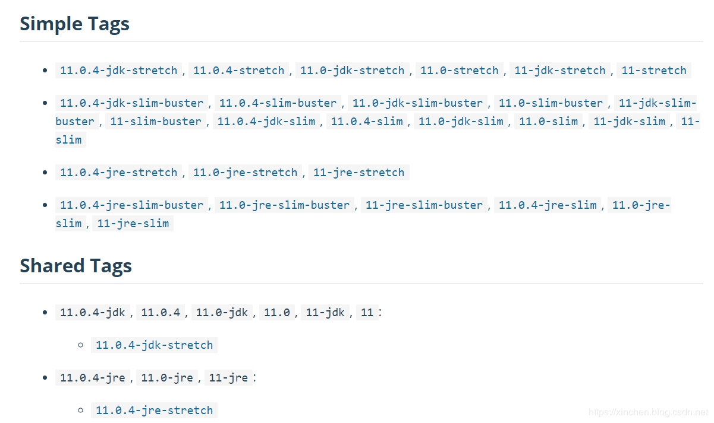
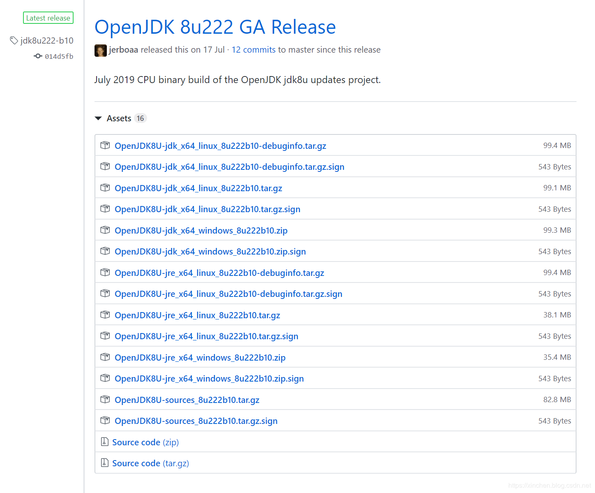

原文出处:本文由博客园博主zq2599提供。
原文连接:https://www.cnblogs.com/bolingcavalry/p/11724054.html
原文连接:https://www.cnblogs.com/bolingcavalry/p/11724054.html
为什么需要ARM64架构的OpenJDK8的Docker镜像
对现有的Java应用，之前一直运行在x86处理器环境下，编译和运行都是JDK8，如今在树莓派的Docker环境运行(也可能是其他ARM环境，如华为的泰山ARM服务器)，需要JDK8镜像作为基础镜像。
OpenJDK的官方Dockerfile
去OpenJDK的docker镜像官网查找找，地址是：https://hub.docker.com/r/arm64v8/openjdk ，如下图，只有JDK11的镜像：

为啥没有OpenJDK8的镜像
心中略有不甘，想搞清楚为何没有，来探索一下；
- 打开OpenJDK8的官方GitHub，去看镜像的制作脚本Dockerfile的源码，地址是：https://github.com/docker-library/openjdk/blob/master/8/jdk/Dockerfile ，注意下图的内容：

- 从上图的分析我们了解到OpenJDK8镜像制作过程：先获取当前宿主机的处理器架构，执行命令是$(dpkg --print-architecture)，在树莓派上执行此命令试试，如下，可见得到了$(dpkg --print-architecture)：
root@raspbian:~# echo $(dpkg --print-architecture)
arm64- 看上图红框3中的代码，如果处理器架构是arm64，那么变量upstreamArch就等于aarch64；
- 看上图红框4中的代码，下载OpenJDK包的地址是${JAVA_BASE_URL}${upstreamArch}linux${JAVA_URL_VERSION}.tar.gz，这里面JAVA_BASE_URL、upstreamArch、JAVA_URL_VERSION的值都已经确定了，于是真实的地址就是：
https://github.com/AdoptOpenJDK/openjdk8-upstream-binaries/releases/download/jdk8u222-b10/OpenJDK8U-jdk_aarch64_linux_8u222b10.tar.gz- 在浏览器输入上述地址试试，发现浏览器返回的是404错误，也就是说此地址无效；
- 将上述地址中的aarch64替换成x64，看看X86处理机架构下有没有OpenJDK8的下载包，新地址是：https://github.com/AdoptOpenJDK/openjdk8-upstream-binaries/releases/download/jdk8u222-b10/OpenJDK8U-jdk_x64_linux_8u222b10.tar.gz ，此地址可以顺利下载；
- 来看看OpenJDK官方为JDK8版本提供了哪些下载包，地址是：https://github.com/AdoptOpenJDK/openjdk8-upstream-binaries/releases ，如下图，清一色的x86架构：

结论
OpenJDK官方镜像的制作原理，是依据宿主机CPU架构去官方下载对应的OpenJDK安装包，再做成镜像，目前OpenJKD8的安装包并没有提供ARM版本，因此官方没有提供ARM版本的OpenJDK8的Docker镜像；
解决之道
现状是OpenJDK官方在ARM64架构不提供8版本的官方Docker镜像，解决此问题的思路有两个(个人观点，欢迎探讨)
- 自己编译一个8版本的OpenJDK安装包，以此来做Docker镜像；
- Oracle提供了ARM版本的JDKD安装包，以此包来做Docker镜像；
- 用OpenJDK的11版本，但是11和8的差异要自行处理；
对于第一种方式，自己编译8版本的OpenJDK，难度太大(对我自己而言)，因为编译OpenJDK需要低版本的OpenJDK作为编译工具，也就是说我要找到ARM版本的OpenJDK7，才能编译ARM版本的OpenJDK8，因此我觉得这样做的难度太大...
对于第二种和第三种，后续的章节我们一起来实战吧；